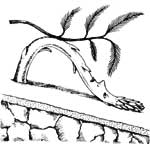

ILLUSTRATIONS BY R.J. KAUFMAN
If you'd like our panel of consultants to answer a question concerning some aspect of self-reliant living that has you stumped, send it to Ask Our Experts, Mother Earth News, P.O. Box 70, Hendersonville, NC 28793. The most frequently asked questions will be answered here-and here only-so that we can all benefit from what these folks have to say.
I just read Susan Glaese's article on compost in MOTHER No. 101, in which she said to "go light on evergreens" when building a compost pile. Now I'm antsy about my asparagus.
When I moved to my present home in Maine last fall, I faced truly dreadful soil: an inch of slimy, acid red clay resting on bedrock, all on a 30° slope. To create growing beds, I used what I had most of-evergreen boughs, layer upon layer of mostly white spruce, alternating with lime and clay. Then I planted my healthy, seed-grown, compost-fed asparagus plants on these built-up beds and added a nitrogen fertilizer. I also planted seven fruit trees on the same mounds.
My questions: Can I expect good results? Should I replant this spring, adjusting the soil composition?
It sounds as if you have two major problems. The first is that your beds sit on bedrock, which prevents your plants from developing the deep root systems they need for optimum growth. Asparagus crowns are usually buried eight to 12 inches deep, and fruit trees are planted even deeper, depending on the root ball.
The second problem is the soil's pH. Heavy applications of spruce and fir would make your acid soil even more acid, drastically inhibiting the bacterial growth needed for decomposition and stunting germination in many plants as well. Asparagus and most fruit trees prefer a pH between 6 and 7; I suspect yours is lower.
I haven't seen the site, of course, but if I were you, I'd probably start over. First, try to find a garden site that's lacking in bedrock. Then incorporate as much well-aged compost as you can, made from a variety of less acid ingredients-straw, hay, manure, weeds, grass clippings. (Or you can buy readymade compost.) Keep working this into the soil, and over the years you will see a difference in aeration, tilth, pH, and general health. Third, I've found that working sharp sand into clay soil makes a real difference. Finally, have your soil's pH checked, and then ask your local agricultural agent how much lime to apply for that reading.
I realize that all this sounds like an awful lot of work and goes against the ideal of using on-site materials, but it may be what it takes to cultivate plants that like neutral or alkaline soil. You might also want to consider raising acid-loving crops-such as grapes and most berries-which are better adapted to your area.
-Susan Glaese
Susan Glaese is MOTHER's head gardener.
Three years ago, I had copper plumbing installed in my home. The 50°70 tin-50% lead sweat solder used on the joints puddled in the elbow fittings. Lately, with all the negative publicity over lead in drinking water, I've become concerned about health risks stemming from our household water's exposure to the solder. Has there been any research on this subject?
Lead has been identified as a toxin that can affect the body's nervous system, its normal vitamin D metabolism, the kidneys, and the blood-forming processes. Lead is especially harmful to unborn and young children, and recent evidence suggests that even minor concentrations in the blood can have negative effects.
In light of these and other facts, amendments to the Safe Drinking Water Act of 1974 were signed into law in June 1986. The new amendments include provisions that allow the Environmental Protection Agency to prohibit the use of solder or flux containing more than .2% (two-tenths percent) lead in any public water supply system or any building connected to a public system. They also require a warning label to be displayed on any solder containing more lead than the legal limit. Additionally, the lead content of pipes and fittings used in public systems is limited to 8%. Federal mortgage insurance and assistance may be denied to new residential property that fails to meet the current standards.
A well-soldered sweat joint should not have an excessive amount of solder flow beyond the point of contact, but solder is often exposed to the water supply nonetheless. The amount of lead that leaches from a joint depends upon the corrosiveness of the water, the age of the plumbing fittings, and the amount of contact time between the water and the soldered joints.
There are several options available to those concerned over lead-soldered plumbing. One is to replace copper sweat-fit pipe with approved PVC and CPVC plastic plumbing. Another is to replace the fittings and to resolder the joints with a nonlead solder such as a tin-antimony, copper-tin, or silver-tin blend. (These cost more than tin-lead solder and have higher melting temperatures, but these concerns are minor when considering the cost of a complete plumbing system.) Finally, it may be possible to control lead contamination through the use of water treatment and corrosion-inhibiting equipment.
-Richard Freudenberger
Richard Freudenberger is an associate editor and MOTHER's research coordinator.
|
|
 |
|